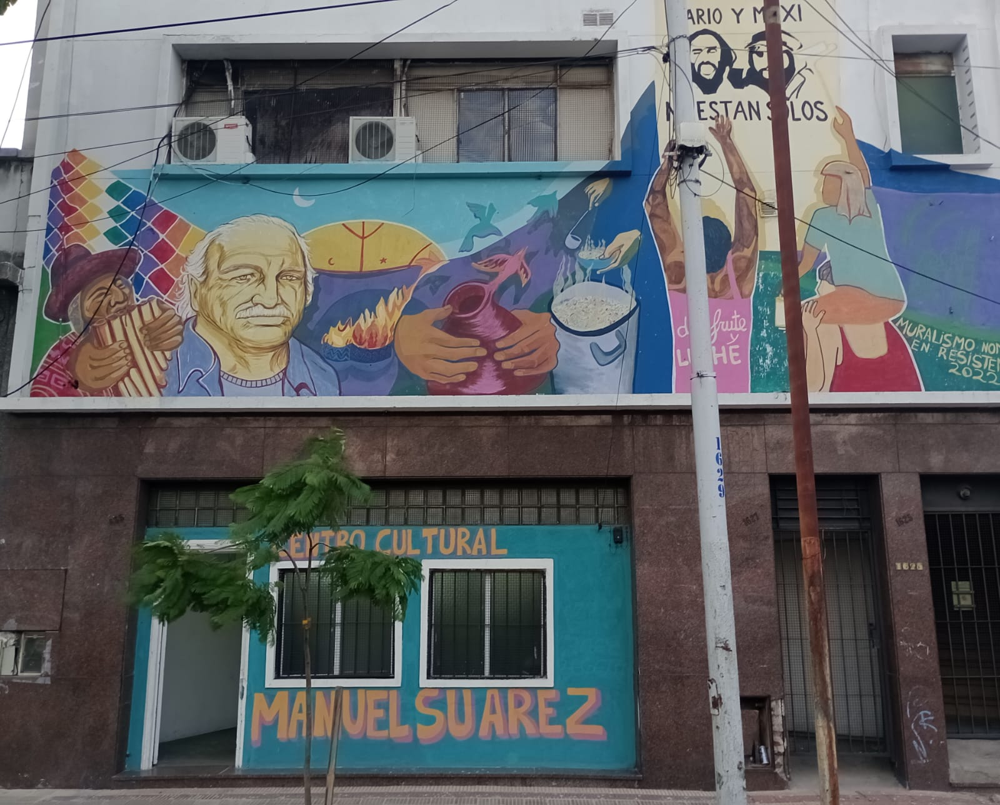

NUESTRA HISTORIA
Nuestro Centro Cultural comenzó sus actividades en el cambio de siglo con la gran crisis socioeconómica que atravesamos como sociedad. En nuestro espacio fuimos sede de múltiples actividades, fiestas y conmemoraciones, siendo un espacio de referencia para la comunidad de zona sur y Piñeyro. Nuestros pilares siempre han sido las luchas sociales y la dignificación de nuestro pueblo.
En nuestros inicios albergamos el movimiento piquetero, un canal de televisión (Barricada TV) e impulsamos variadas expresiones culturales, entre ellas FM LA MOSCA 93.5. A partir de 2011 funcionó por varios años en nuestro segundo piso el Bachillerato Popular “Arbolito” y se abrió un espacio de producción de cerámica para la formación laboral y una cooperativa que funciona hasta nuestra actualidad.